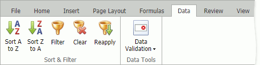

Filtering
Use commands in the Data tab's Sort & Filter group to activate filtering, reapply a filter, or remove all the filters in a worksheet.

Select a table and click the Filter button to enable filtering. Click the arrow in a column's header to apply a filter to the column.
Apply a Filter
To filter a column by particular values, click the arrow in the column header and select Filter by Values.... This invokes a dialog box with a list of column values.
Select/unselect check boxes to display/hide values.

To apply a custom filter, click the arrow in a column header, select Text Filters command, and select one of predefined filters. This invokes the Custom AutoFilter dialog box. Specify a criteria operator and an operand value and click OK.

Note
The Text Filter menu's name and content depends on the type of data in the filtered column (text, numeric values or dates).
Clear Filter
Click the arrow in a column's header and select Clear Filter From "ColumnName" to clear the column's filter.

Click the Clear button in the Data tab's Sort & Filter group to clear all the filters.
Reapply Filter
New or modified data in a column is not filtered automatically. Click the Reapply button to reapply the filter.